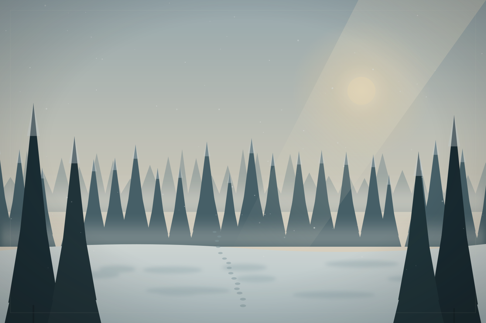
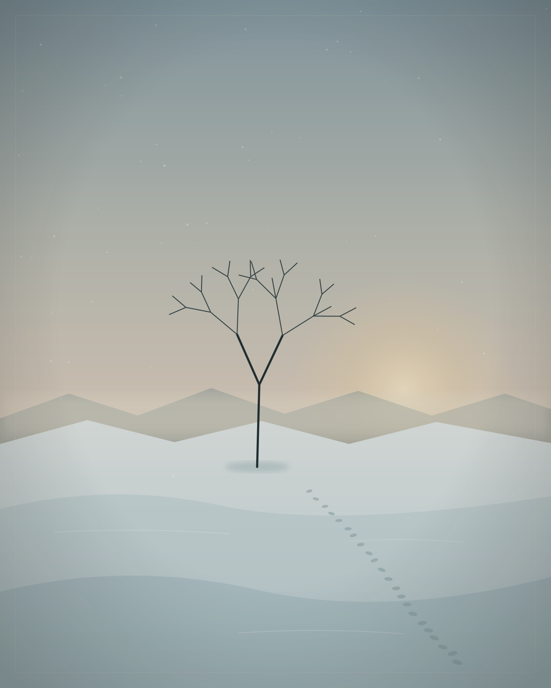
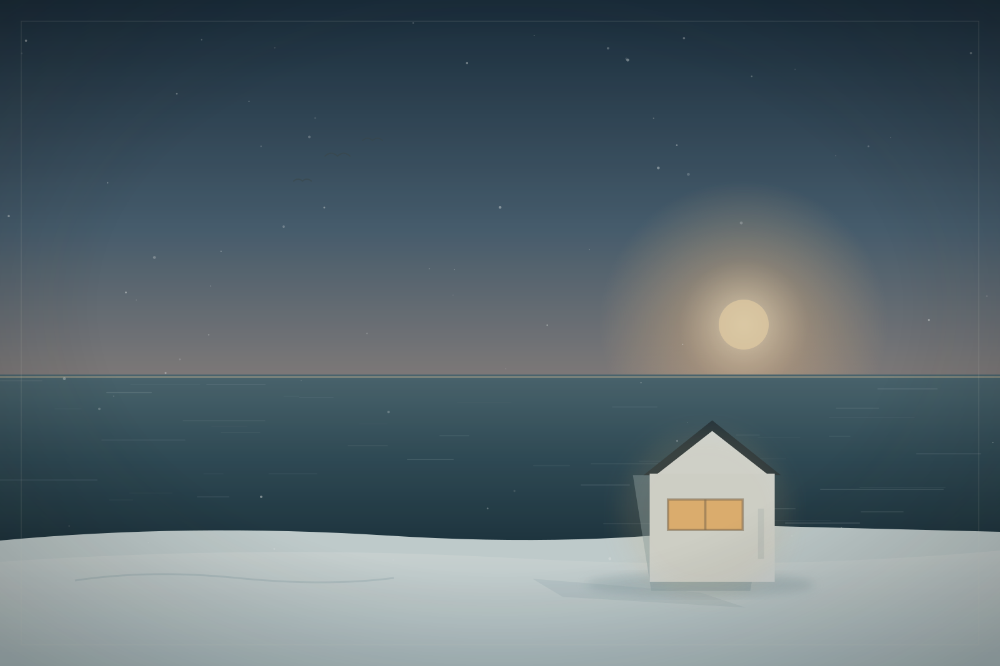
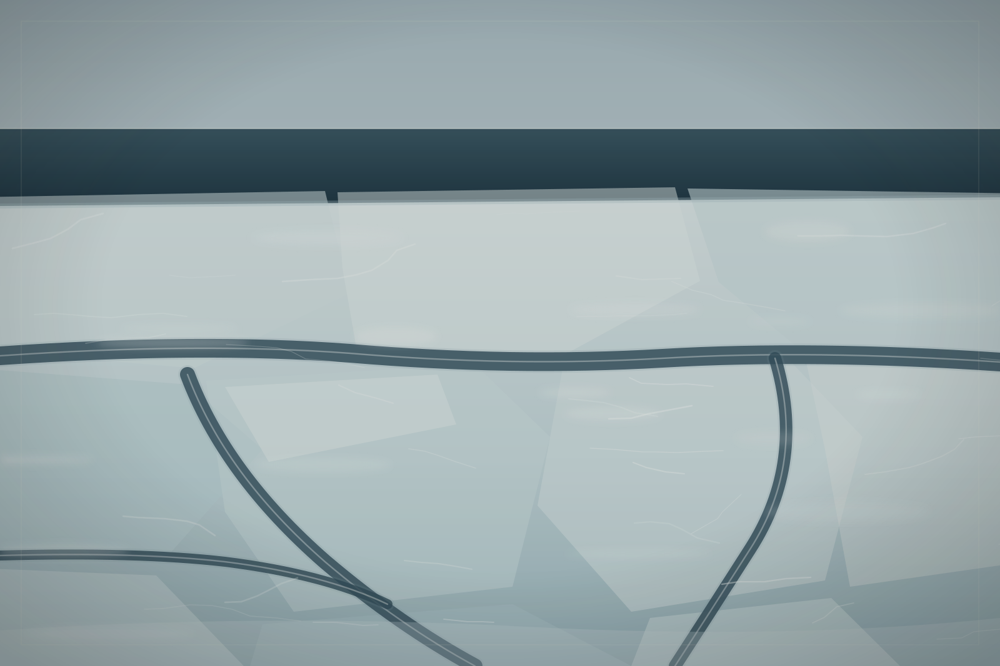
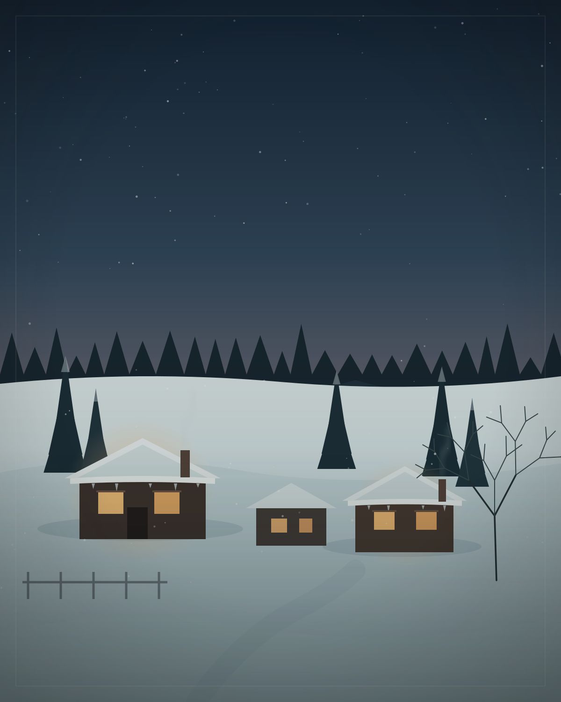
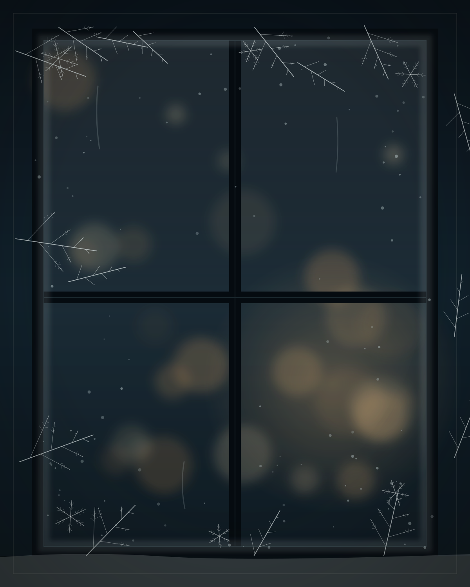

Album 04 / 04 · 2026 冬
雪线以北
Beyond the Snow Line
- 年份
- 2026 年冬
- 地点
- 长白山 / 阿那亚 / 漠河
- 影像
- 18 幅（精选 6 幅）
- 页数
- 36 页
- 介质
- 数码 · 中画幅
卷首语 / Prologue
雪落下的时候，世界会先安静下来，然后才慢慢变白。
这册影像拍于一年里最冷的几个地方：长白山的林线，冬天的海， 还有北方小城清晨的炊烟。
我们想记录的不是寒冷本身，而是寒冷里仍然亮着的东西—— 一扇窗，一盏灯，一个人在雪地上留下的呼吸。
拾光 · 2026 年 11 月
Chapter 01The First Snow
初雪In the Quiet Woods
雪把声音收走了。林子里只剩下脚踩下去的那一下， 和更远处雪落的声音。


“雪不制造寂静，
它只是把原本的声音，一层层盖住。” 旅途笔记 · 十一月
Chapter 02The Frozen Sea
冻海Where the Tide Stops
海在冬天退得很远。浪停在岸边，像一句话说到一半， 被冷空气按住了。


Chapter 03Warm Windows
归人Where the Lights Are
天黑得很快。烟从屋顶升起来，窗户一盏一盏亮起， 路就有了尽头。




End Note · 04 / 04
雪会化，路会被重新踩出来，
而我们会记得，那些在寒冷里仍然亮着的光。
下一辑，等春天
回到册集 · 拾光 Vol. 02 正在筹备